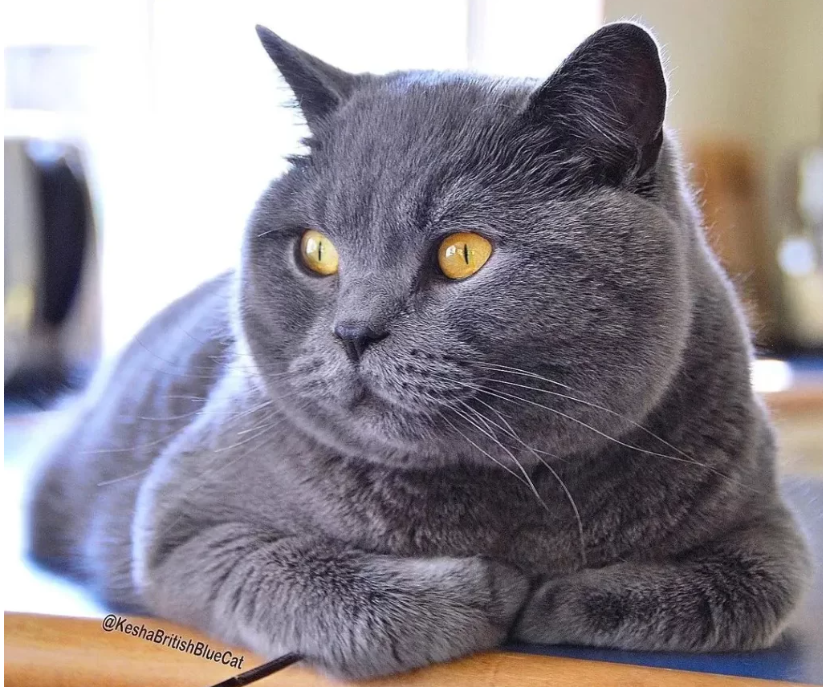
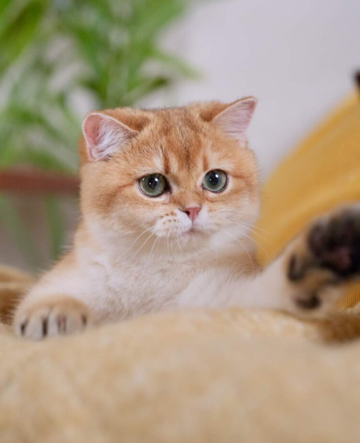
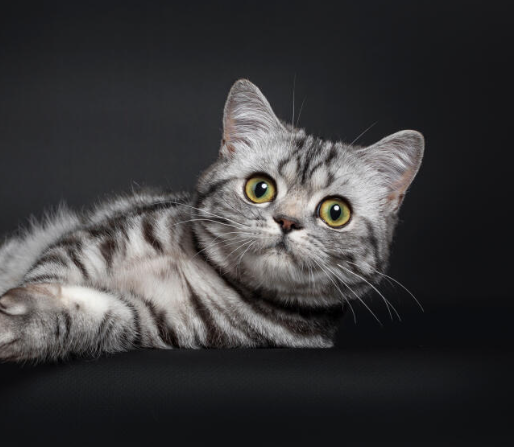
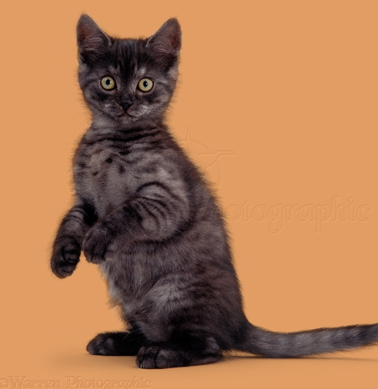

にゃにこれ? 喵的什麼?
英國短毛貓 (British Shorthair)




單色系 (Solid)
漸層系 (Shaded)
虎斑系 (Tabby)
煙燻系 (Smoke)
💡 提示：點擊「體重卡片」可切換性別數據
LIFESPAN
12-15 年
COAT
短但濃密 / 中偏高等掉毛
COLOR
單色系
( Solid )
( Solid )
漸層系
( Shaded )
( Shaded )
虎斑系
( Tabby )
( Tabby )
煙燻系
( Smoke )
( Smoke )
概覽 Overview
英國短毛貓是一種普遍的貓咪品種，以其簡潔的外觀和易於照顧的特性而受到歡迎。它們通常擁有短而密的被毛，容易打理，適應力強，是理想的寵物選擇。
性格特徵 Temperament
英國短毛貓性格活潑、友善，容易與人類建立情感連結。它們既獨立又親人，適合在家庭環境中生活。英國短毛貓對新環境的適應能力強，是理想的伴侶動物。
健康保養 Health & Care
飼養英國短毛貓需嚴格控制體重以防肥胖與關節負擔，並使用流動飲水器預防泌尿道結石。日常應養成每日刷牙習慣，每週梳毛 2～3 次預防毛球症，並定期安排心臟與腎臟超音波篩檢遺傳疾病。
主糧推薦 Food Recommendation
英國短毛貓應依成長階段調整飲食：幼貓選高蛋白高熱量配方；成貓控熱量並補充關節與皮膚保健成分；熟齡貓低磷延緩老化。並宜使用流動水提升飲水意願。